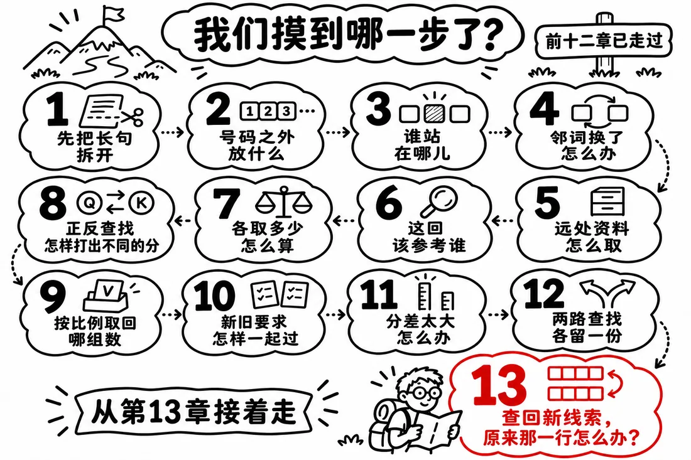
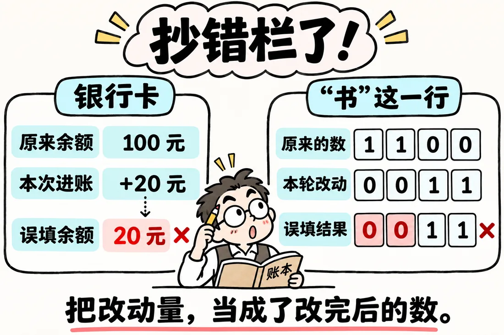
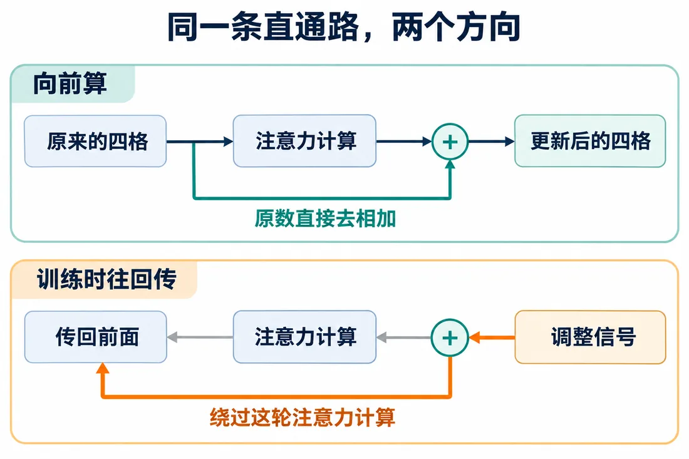
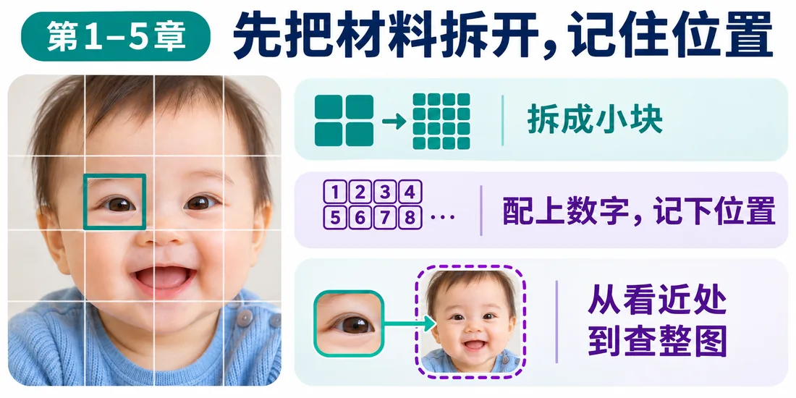
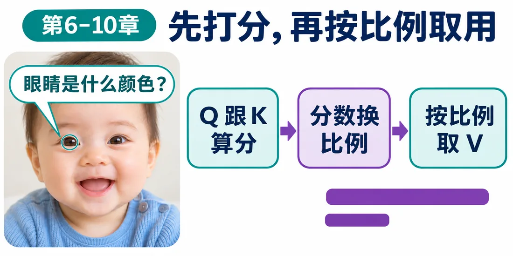
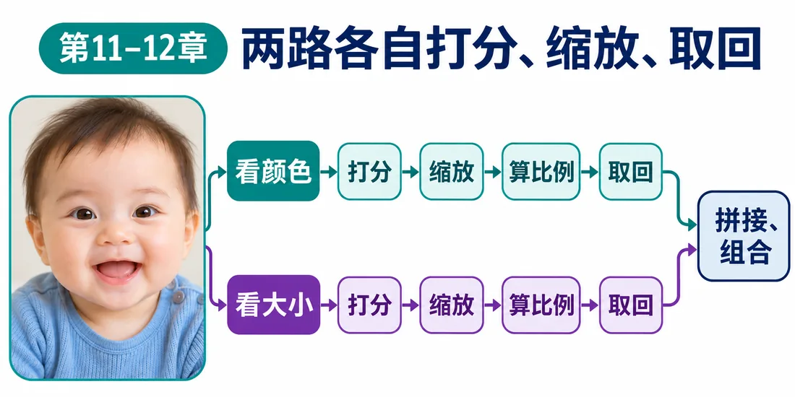
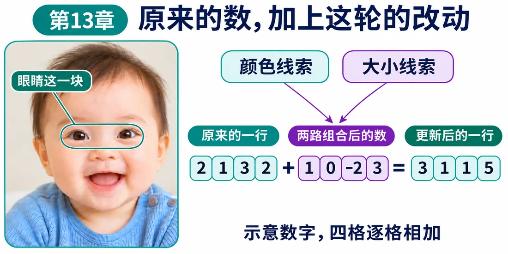

我们在这儿
从一句长话出发，我们已经做了这些事：
上一篇，“书”从两路取回了四格。
现在它手上有两组数字：
这一篇决定该怎么合。

这一篇要解决用残差连接把新线索加回原输入，不顶替原来的信息。
大概阅读约 9–12 分钟
想想银行卡。
卡里原本有 100 元，今天入账 20 元。
如果银行不做加法，直接删掉原来的 100，填上 20，余额就从 100 变成 20。
它把“本次新增”错当成了“当前余额”。
拿简单数字看：
如果直接填进去，整行变成 [0,0,1,1]，前两个 1 当场变成 0。
改动量里的 0，意思是“这里不需要改”。
一旦顶替原值，0 就变成了“这个位置本身就是 0”。
下面这张图，把银行卡和“书”的错误摆在一起看。

回到银行卡：100 加 20，得 120。没有新增，就加 0，维持 100。
“书”也一样：
前两格加 0，信息完好。后两格加 1，线索补进来。
给“书”做两组对照：
假设这一轮计算，两回都算出第二格的新值是 1。
如果直接顶替，两回交出去的第二格都是 1。原来 1 和 0 的差别没了。
如果加回：
原本的差异继续维持。
输入表 X 和取回表 Z，在同一位置、同一格对齐相加：Y＝X+Z。
让原数走一条直通线到加号，另一条送来本轮新算的数。这种接法叫残差连接。
这样模型只需学本轮要调整多少：
训练时，调整信号要从后往前传。
就像公司里用户说“找不到结账按钮”。层层转述到产品那里，可能只剩“体验有提升空间”，到底改哪儿听不清。
残差也给信号留了一条近路。它可以沿原数那条路往回走，绕过这一轮计算。
下面这张图，看这条近路怎么留出来。

图先看清近路。下面这个电路板，可以自己点一点，看原数怎么绕回来。
主线到这儿就够了。要是还想顺着宝宝照片再看一遍，再打开下面的折叠区。
这部分只是补一条照片线。按切块、检索、分头、加回的顺序看。

先切块。接着带着问题去检索。

检索流程对上以后，再看两个头怎么分头查。

两路信息都拿到，最后合起来加回去。

这一篇收个尾
这一篇拿到：残差连接，原输入和新改动可以一起往后传。
下一篇接着看：用 FFN 处理更复杂的组合判断。